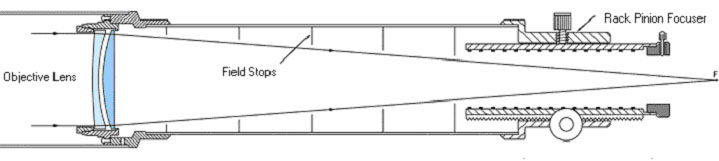
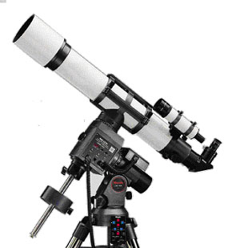
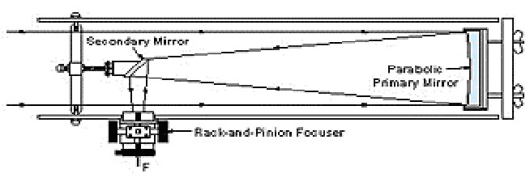
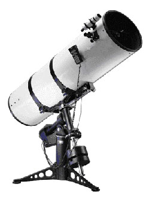
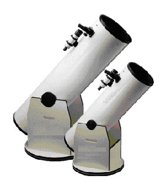
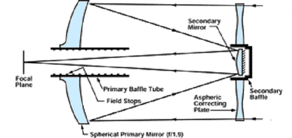
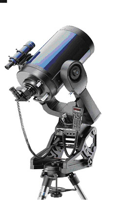
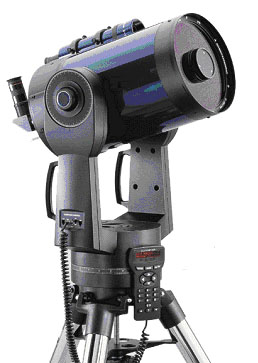

This guide is written for someone with little or no knowledge of telescopes who needs a place to start. We're assuming you're interested in astronomy — or you wouldn't be reading this — and that you want to make a wise first purchase rather than an expensive mistake.
Before You Buy: Four Questions to Answer First
- What do you expect to see? The Moon, planets, star clusters, and galaxies all have different requirements.
- How much do you know about the night sky — and how much are you willing to learn?
- How much do you want to spend? A realistic budget includes accessories beyond just the scope.
- Where will you be using it? Your backyard, a dark-sky site, travel?
After you've decided what you want, don't expect to find it at a department store or camera shop. The majority of quality telescopes are sold through specialty astronomy retailers — either online or by mail. Have a clear idea of what you want before you contact them.
Mounts: Just As Important as the Optics
A wobbly mount ruins even the finest optics. The mount is just as important — arguably more so than the optical tube. Consider:
- Alt-azimuth mounts move up-down and left-right. Simple and intuitive, but not ideal for long-exposure astrophotography.
- Equatorial mounts are tilted to match Earth's rotation axis, allowing the scope to track stars with a single motor. Better for photography and extended viewing.
- GoTo mounts (computerized) automatically point to any object in their database. Great if you don't want to spend time learning the sky; also useful at star parties when a long line of people want to see what's in the eyepiece.
- Dobsonian mounts are a special alt-azimuth design made of simple materials (wood, Teflon). Very stable, very affordable. Ideal for visual observing with large apertures.
Aperture: The Single Most Important Spec
Aperture — the diameter of the main lens or mirror — determines how much light the scope gathers. More aperture means fainter objects, finer detail, and better star separation. It also means more weight and bulk. The tradeoff between aperture and portability is the central tension in every telescope purchase.
The Three Main Types of Telescope
Refractors


The refractor is what most people picture when they think "telescope" — a tube with a lens at the front and an eyepiece at the back. Light enters through the objective lens and travels directly to the eyepiece.
Pros: Sharp, high-contrast images; low maintenance; easy to transport; no mirrors to collimate. A good small refractor gives wonderfully crisp views of the Moon, planets, and double stars.
Cons: Expensive for large apertures — a high-quality 4" refractor can cost as much as a 10" Dobsonian. Department store refractors are typically very poor quality. Avoid any scope marketed primarily by magnification power.
Price range: $250–$1,000+ for a quality refractor in the 70–100mm range.
Newtonians (Reflectors)



A Newtonian uses a curved primary mirror at the back of the tube to collect light, then a small flat secondary mirror at a 45° angle near the top to redirect it to an eyepiece mounted on the side. No expensive large lens required.
Pros: Best value for aperture. A 10" Dobsonian — the most popular mount for Newtonians — costs under $600 and shows stunning deep-sky objects.
Cons: Needs occasional collimation (mirror alignment). Large aperture Dobs can be bulky. Standard Dobs are not well-suited to astrophotography.
Price range: A 6" Dob can be found for under $300; 10" for under $600. Computerized equatorial Newtonians cost more.
Schmidt-Cassegrain (SCT)



The SCT is a compact, versatile instrument. Light enters through a corrector plate at the front, reflects off the primary mirror at the back, then off a secondary mirror on the corrector plate, and finally passes through a hole in the primary to the eyepiece at the rear of the tube. This "folded" optical path makes SCTs very compact relative to their focal length.
Pros: Versatile — good for visual observing, planetary work, and astrophotography. Long focal length suits high-magnification work. Available up to 14" aperture for amateurs.
Cons: More expensive than Dobs for equivalent aperture ($1,000+). Most include computerized GoTo mounts (a pro or con depending on preference). Larger models are heavy — a 12" SCT with its fork mount can exceed 70 lbs.
Price range: $1,000–$5,000+ depending on aperture and mount sophistication.
Focal Ratio and Magnification
Focal length is the distance from the objective (lens or mirror) to where light comes into focus. Focal ratio (or f/number) is focal length divided by aperture. Magnification equals focal length divided by the eyepiece focal length.
Fast scopes (f/5 or f/6) give wide fields of view — great for sweeping nebulae and clusters. Slow scopes (f/10 or f/11) are more forgiving optically and reach higher magnifications with the same eyepieces. That said, most observing is done at 40× to 120×, and almost any scope handles this range comfortably.
The Best Scope Is the One You'll Actually Use
No matter how good the optics, a scope that stays in the closet is worthless. Choose a scope you can physically carry to your observing spot without dreading the effort. Consider setup time, storage space, and whether you'll need to transport it.
Also budget for accessories beyond the scope itself: a red flashlight, a few eyepieces, star charts or a sky atlas, and — believe us — there are many more ways to spend money in this hobby once you get started.
Where to Buy
Quality astronomy telescopes are sold by specialty retailers. A few reputable sources:
- High Point Scientific
- Celestron
- Meade Instruments
- Sky-Watcher
- TeleVue (premium refractors and eyepieces)
- Stellarvue (quality apochromatic refractors)
And of course — bring your questions to an HVA meeting or star party. Members are always happy to share what they've learned, let you look through their scopes, and help you make an informed decision.